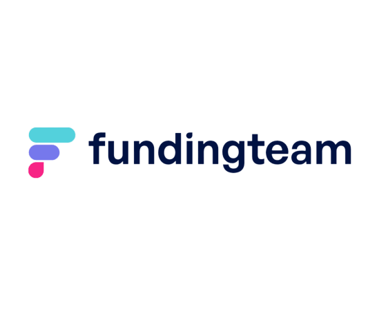
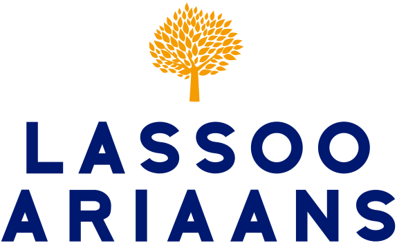
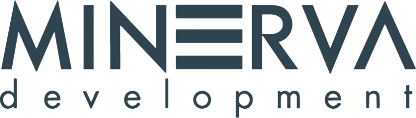

Minder administratie. Meer aandacht voor je klant. AI Volution automatiseert de complete klantreis voor dienstverleners: van intake tot loyaliteit, van facturatie tot 24/7 bereikbaarheid. Zodat jij meer tijd overhoudt om te leveren op niveau.



Van klant-intake tot loyaliteitsprogramma - we automatiseren de volledige klantreis voor dienstverleners. Bewezen bij bedrijven die schalen naar 20+ locaties of vestigingen zonder extra operationeel personeel.
De onboarding bepaalt de eerste indruk als klant. Onze AI stuurt op het juiste moment de juiste informatie: welkomstberichten, installatie-instructies, eerste-bezoek tips. Via WhatsApp of e-mail, afgestemd op het klantprofiel.
Afspraken plannen, herplannen en bevestigen kost meer tijd dan je denkt. Onze AI beheert je volledige agenda, plant automatisch in op basis van beschikbaarheid en stuurt herinneringen.
Facturen handmatig aanmaken, versturen en openstaande posten nabellen is het saaiste werk dat er bestaat. Onze AI automatiseert het volledige facturatieproces inclusief incasso-opvolging.
Klanten verwachten direct antwoord - ook buiten kantoortijden. Onze native Nederlandse AI beantwoordt vragen via telefoon, WhatsApp en chat. Elke klant wordt direct herkend met volledige context.
Handmatig rapportages samenstellen over bezetting, omzet, klanttevredenheid en churn kost uren. Onze AI verzamelt, analyseert en rapporteert automatisch.
Klanten die willen opzeggen stilletjes laten gaan is omzet weggooien. Onze AI detecteert churn-signalen vroegtijdig en start automatisch retentie-acties. Vertrekkende klanten worden ambassadeurs.
Plan een gratis consult en ontdek hoe AI Workforces jouw klantreis versterken -- van intake tot loyaliteit.